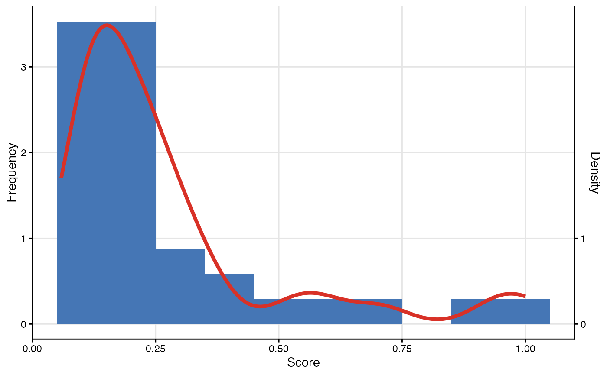
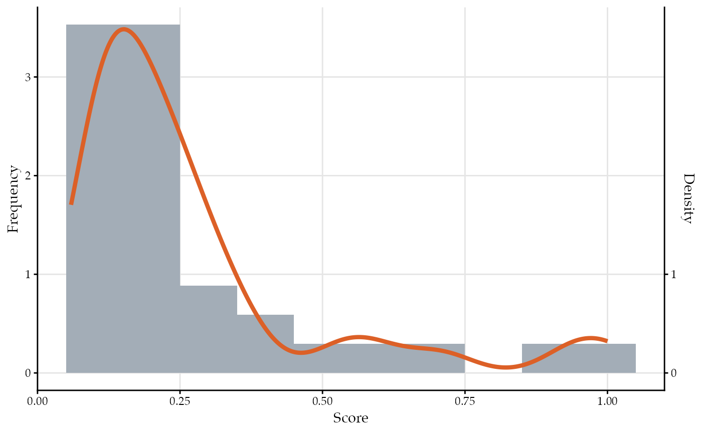

This function enables plots to be quickly, easily and consistently themed. This is achieved by setting a theme option, usually at the start of an R session, that enables the palette to be used for all autograph-consistent plotting methods. This includes thematic colours for backgrounds, highlights, sequential, divergent and categorical colour schemes. The function sets these palettes to options that are then used by the various plotting functions.
If no theme is specified (i.e. the function is called without argument),
the current theme is reported.
The default theme is "default".
This theme uses a white background, blue and red for
highlighting, and a blue-white-red divergent palette.
The themes can be changed at any time by calling stocnet_theme()
or its alias set_stocnet_theme() with a different theme name.
Other themes include those based on the colour schemes of various universities, including ETH Zurich, UZH, UNIBE, RUG, and Oxford. Other themes include "bw" for black and white, "crisp" for a high-contrast black and white theme, "neon" for a dark theme with neon highlights, and "rainbow" for a colourful theme. The "clay" theme follows the palette and fonts used in the slides and documents that Anthropic's Claude produces: an ivory background, a slate ink base, and a clay orange highlight. Most themes are designed to be colour-blind safe.
Arguments
- theme
String naming a theme. By default "default". The following themes are currently available: default, bw, crisp, neon, clay, iheid, ethz, uzh, rug, unibe, oxf, unige, cmu, iast, hwu, rainbow. This string can be capitalised or not.
- persist
Logical, by default FALSE. If TRUE, the theme is remembered across sessions, by writing it to the user's configuration directory (see
tools::R_user_dir()). Nothing is written to disk unless this is set explicitly. Usestocnet_theme(persist = FALSE)when setting a theme to forget a previously persisted choice.
Value
This function sets the theme and palette(s) to be used across all stocnet packages. The palettes are written to options and held there.
Fonts
Some themes also set a preferred font for use in plots,
if available on the system (a check is performed).
In some cases, this includes a vector of options to try in sequence.
If none of the preferred fonts are available, a sans-serif font is used.
Themes then look much more alike than they should,
since the typeface carries a good deal of an institution\'s identity.
Call list_fonts() to see which font families R can currently see,
and ag_font() to see which one the current theme settled on.
To make more fonts available, there are two steps.
Install the font on your computer. Many of the fonts these themes prefer are free: Google Fonts (https://fonts.google.com) offers Roboto, Open Sans, Source Sans 3, Source Serif 4, Noto Serif, Montserrat, and Playfair Display, among others. Download the family, then install it as you would any other font: double-click the files and choose "Install" on Windows, open them in Font Book on macOS, or copy them into
~/.local/share/fontsand runfc-cache -fon Linux. Some fonts are licensed and are only available to members of the institution concerned, or for purchase; the theme falls back to a near relative where it can.Make the font available to R. Install the
{systemfonts}package and the fonts installed on your system are found directly, with no further step. Otherwise, useextrafont::font_import()once andextrafont::loadfonts()in each session. Restart R after installing a font, then calllist_fonts()to check that the family is now listed, and set the theme again.
Note that a font is only used where the graphics device can draw it.
The {ragg} devices (for example ragg::agg_png()) and {svglite} are
the most reliable;
the default PDF device needs the font embedded,
for which extrafont::embed_fonts() is available.
Custom
If you have specific needs or preferences, you can
set your own palettes or overwrite part of an existing one using options().
For example, to set a custom base color, you can use:
options(snet_highlight = c("#1b9e77", "#d95f02", "#7570b3")).
This will set a custom highlight color palette.
Similarly, you can set snet_div for divergent palettes
and snet_cat for categorical palettes.
See also
Other themes:
list_fonts(),
theme_colorblind,
theme_medium
Examples
stocnet_theme("default")
plot(netrics::node_by_degree(ison_karateka))

stocnet_theme("uzh")
plot(netrics::node_by_degree(ison_karateka))
